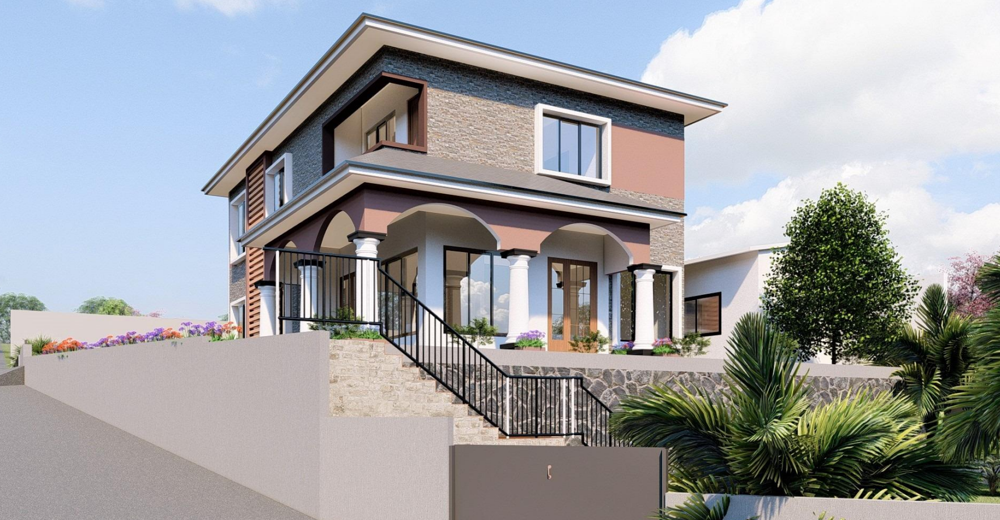
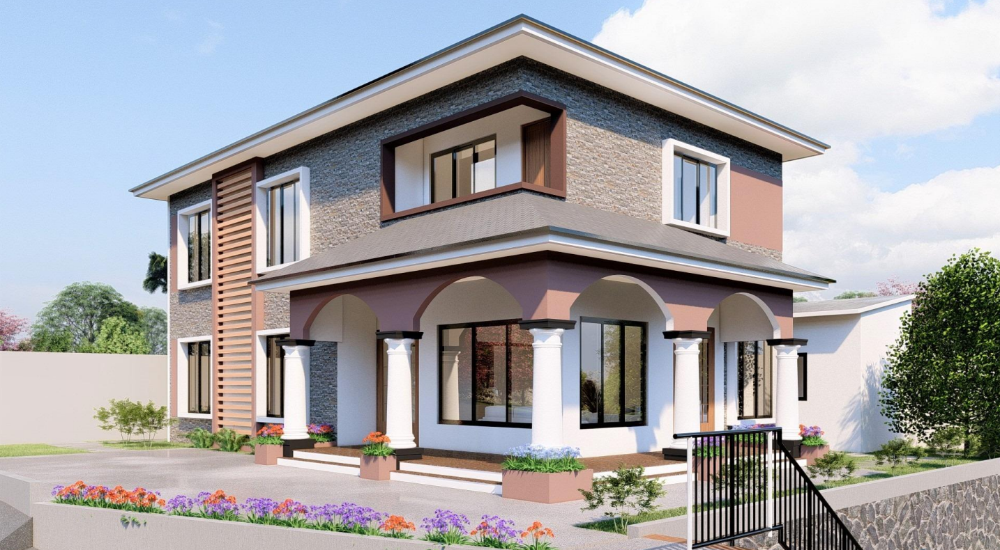
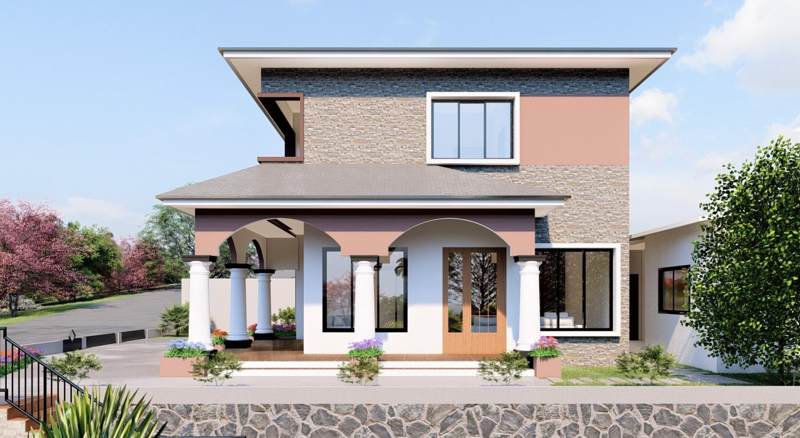
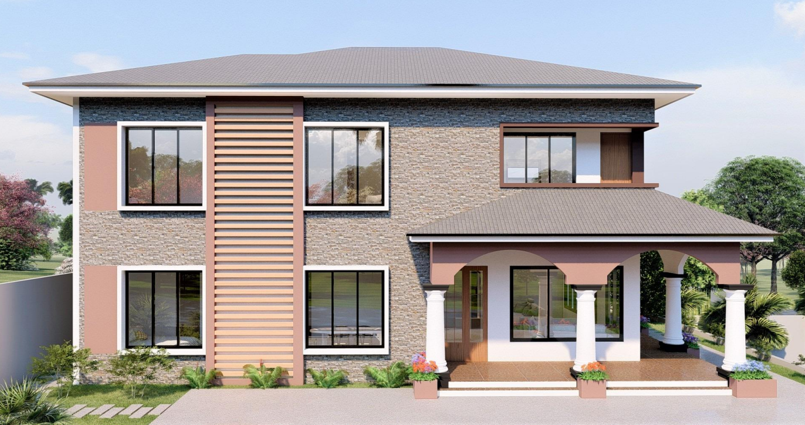
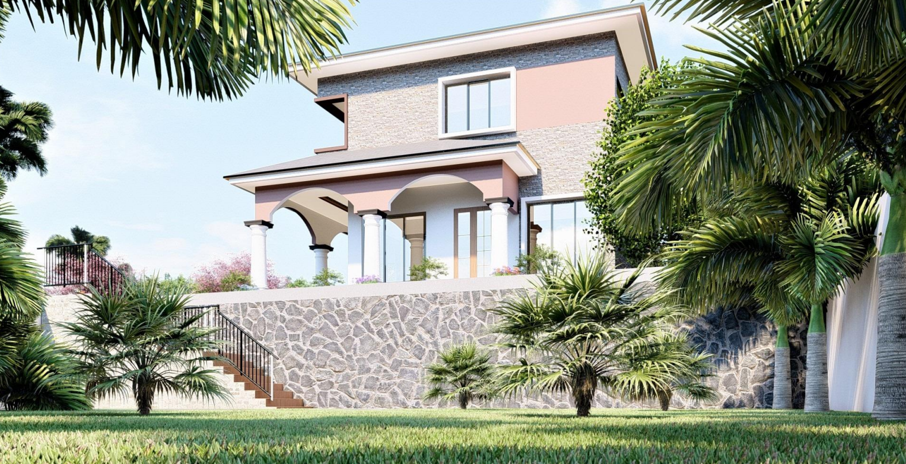

Lignes Épurées & Porte-à-faux
Le Duplex Séquoia est une exploration de la légèreté structurelle et de la pureté des lignes. Le projet se caractérise par un volume supérieur audacieux en porte-à-faux qui semble flotter au-dessus du rez-de-chaussée, offrant ainsi un abri naturel aux espaces de transition extérieurs.
La palette de matériaux est volontairement restreinte : béton blanc, surfaces vitrées toute hauteur et touches de bois (Séquoia) pour apporter de la chaleur aux façades. Cette sobriété esthétique sert un objectif de clarté spatiale et de sérénité.
À l'intérieur, les espaces de vie sont totalement ouverts, favorisant les perspectives transversales et une luminosité abondante. L'escalier central, traité comme une pièce de design, articule les deux niveaux tout en laissant respirer le volume double hauteur du salon.




